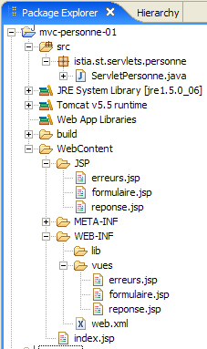
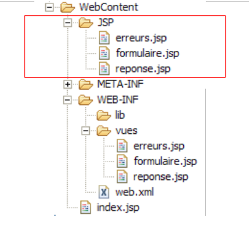

5. Webapplicatie MVC [personne] – versie 1
5.1. De weergaven van de applicatie
De applicatie maakt gebruik van het formulier dat in de voorgaande voorbeelden is gebruikt. De eerste pagina van de applicatie ziet er als volgt uit:

We noemen deze weergave de weergave [formulaire]. Als er correcte gegevens worden ingevoerd, worden deze weergegeven in een weergave die [réponse] wordt genoemd:

Als de invoer onjuist is, worden de fouten weergegeven in een weergave met de naam [erreurs]:

5.2. Architectuur van de applicatie
De webapplicatie [personne1] zal de volgende architectuur hebben:

Deze architectuur is een 1-tier-architectuur: er zijn geen lagen [métier] of [dao], maar slechts één laag [web]. [ServletPersonne] is de applicatiecontroller die alle verzoeken van klanten verwerkt. Om hierop te reageren, maakt hij gebruik van een van de drie weergaven [formulaire, réponse, erreurs].
We moeten vaststellen hoe de controller [ServletPersonne] bepaalt welke actie hij moet uitvoeren bij ontvangst van een verzoek van een gebruiker. Een clientverzoek is een HTTP-stream die verschilt naargelang het wordt gedaan met een GET- of een POST-commando.
Verzoek GET
In dit geval ziet de stream HTTP er als volgt uit:
Regel 1 geeft de opgevraagde URL aan, bijvoorbeeld:
Deze URL kan worden gebruikt om de uit te voeren actie te specificeren. Hiervoor zijn verschillende methoden beschikbaar:
- een parameter in de URL specificeert de actie, bijvoorbeeld [/appli?action=ajouter&id=4]. Hier geeft de parameter [action] aan de controller aan welke actie er van hem wordt gevraagd.
- het laatste element van de URL specificeert de actie, bijvoorbeeld [/appli/ajouter?id=4]. Hier wordt het laatste element van de URL [/ajouter] door de controller gebruikt om te bepalen welke actie hij moet uitvoeren.
Er zijn ook andere oplossingen mogelijk. De twee hierboven genoemde zijn gangbaar.
Verzoek POST
In dit geval ziet de flow HTTP er als volgt uit:
Regel 1 specificeert de opgevraagde URL, bijvoorbeeld:
Deze URL kan worden gebruikt om de uit te voeren actie te specificeren, zoals bij GET. In het geval van GET was de parameter [action] opgenomen in URL. Dit kan hier ook het geval zijn, zoals in:
Maar de parameter [action] kan ook zijn opgenomen in de verzonden parameters (regel 15 hierboven), zoals in:
Hieronder zullen we deze verschillende technieken gebruiken om de controller aan te geven wat hij moet doen:
- de parameter action opnemen in de opgevraagde URL:
- de parameter action verzenden:
- gebruik het laatste element van de URL als naam van de actie:
5.3. Het Eclipse-project
Om het Eclipse-project [mvc-personne-01] van de webapplicatie [personne1] aan te maken, volgen we de procedure die in paragraaf 3.1 wordt beschreven.

We behouden de standaard voorgestelde context [mvc-personne-01] niet. We kiezen [personne1] zoals hieronder aangegeven:

Het resultaat is als volgt:

Mocht men de context van de webapplicatie willen wijzigen, dan gebruikt men de optie [clic droit sur projet -> Properties -> J2EE]:

In [1] geven we de nieuwe context op.
We gaan een submap [vues] aanmaken in de map [WEB-INF]: [clic droit sur WEB-INF -> New -> Folder]:
 |  |
Het nieuwe ontwerp ziet er nu als volgt uit:

Zodra het voltooid is, ziet het project er als volgt uit:

- de controller [ServletPersonne] bevindt zich in de map [src]
- De pagina's JSP van de weergaven [formulaire, réponse, erreurs] bevinden zich in de map [WEB-INF/vues], waardoor de gebruiker ze niet rechtstreeks kan opvragen, zoals in het onderstaande voorbeeld te zien is:

We beschrijven nu de verschillende onderdelen van de webapplicatie [/personne1]. De lezer wordt uitgenodigd om deze tijdens het lezen aan te maken.
5.4. Configuratie van de webapplicatie [personne1]
Het bestand web.xml van de applicatie /personne1 ziet er als volgt uit:
<?xml version="1.0" encoding="UTF-8"?>
<web-app id="WebApp_ID" version="2.4"
xmlns="http://java.sun.com/xml/ns/j2ee"
xmlns:xsi="http://www.w3.org/2001/XMLSchema-instance"
xsi:schemaLocation="http://java.sun.com/xml/ns/j2ee http://java.sun.com/xml/ns/j2ee/web-app_2_4.xsd">
<display-name>mvc-personne-01</display-name>
<!-- ServletPersonne -->
<servlet>
<servlet-name>personne</servlet-name>
<servlet-class>
istia.st.servlets.personne.ServletPersonne
</servlet-class>
<init-param>
<param-name>urlReponse</param-name>
<param-value>
/WEB-INF/vues/reponse.jsp
</param-value>
</init-param>
<init-param>
<param-name>urlErreurs</param-name>
<param-value>
/WEB-INF/vues/erreurs.jsp
</param-value>
</init-param>
<init-param>
<param-name>urlFormulaire</param-name>
<param-value>
/WEB-INF/vues/formulaire.jsp
</param-value>
</init-param>
</servlet>
<!-- Toewijzing ServletPersonne-->
<servlet-mapping>
<servlet-name>personne</servlet-name>
<url-pattern>/main</url-pattern>
</servlet-mapping>
<!-- startpagina's -->
<welcome-file-list>
<welcome-file>index.jsp</welcome-file>
</welcome-file-list>
</web-app>
Wat staat er in dit configuratiebestand?
- regels 34-37: de URL /main wordt verwerkt door de servlet met de naam personne
- regels 10-13: de servlet met de naam personne is een instantie van de klasse [ServletPersonne]
- regels 14-19: definiëren een configuratieparameter met de naam [urlReponse]. Dit is de URL van de weergave [réponse].
- regels 20-25: definiëren een configuratieparameter met de naam [urlErreurs]. Dit is de URL van de weergave [erreurs].
- regels 26-31: definiëren een configuratieparameter met de naam [urlFormulaire]. Dit is de URL van de weergave [formulaire].
- regel 40: [index.jsp] wordt de startpagina van de applicatie.
De URL’s van de pagina’s JSP van de weergaven [formulaire, réponse, erreurs] zijn elk het onderwerp van een configuratieparameter. Hierdoor kunnen ze worden verplaatst zonder dat de applicatie opnieuw hoeft te worden gecompileerd.
Wanneer de gebruiker de URL [/personne1] opvraagt, zal het bestand [index.jsp] het antwoord verzenden (startpagina, regel 40). Dit bestand bevindt zich in de hoofdmap van de map [WebContent]:

De inhoud ervan is als volgt:
<%@ page language="java" contentType="text/html; charset=ISO-8859-1"
pageEncoding="ISO-8859-1"%>
<!DOCTYPE HTML PUBLIC "-//W3C//DTD HTML 4.01 Transitional//EN">
<%
response.sendRedirect("/personne1/main");
%>
De pagina [index.jsp] leidt de client gewoon door naar de URL [/personne1/main]. Wanneer de browser dus de URL [/personne1] opvraagt, stuurt [index.jsp] het volgende antwoord HTTP terug:
- regel 1: antwoord HTTP/1.1 om de server te laten weten dat hij moet doorverwijzen naar een andere URL
- regel 4: de URL waarnaar de browser moet worden omgeleid
Na dit antwoord zal de browser dus de URL [/personne1/main] opvragen, zoals hem wordt gevraagd (regel 4). Het bestand [web.xml] van de applicatie [/personne1] geeft aan dat dit verzoek wordt verwerkt door de controller [ServletPersonne] (regels 35-36).
5.5. De code van de weergaven
We beginnen bij het schrijven van de webapplicatie met het schrijven van de weergaven. Deze maken het mogelijk om de behoeften van de gebruiker op het gebied van de grafische interface in kaart te brengen en kunnen worden getest zonder dat de controller aanwezig is.
5.5.1. De weergave [formulaire]
Dit is de weergave van het formulier voor het invoeren van de naam en de leeftijd:

type HTML | naam | rol | |
<input type="text"> | txtNom | naam invoeren | |
<input type="text"> | txtAge | Leeftijd invoeren | |
<input type="submit"> | de ingevoerde waarden naar de server verzenden via de URL /personne1/main | ||
<input type="reset"> | om de pagina terug te zetten in de staat waarin deze aanvankelijk door de browser werd ontvangen | ||
<input type="button"> | om de inhoud van de invoervelden [1] en [2] te wissen |
Deze wordt gegenereerd door de pagina JSP [formulaire.jsp]. Het sjabloon bestaat uit de volgende elementen:
- [nom]: een naam (String) die is gevonden in de sessieattributen gekoppeld aan de sleutel "naam"
- [age]: een leeftijd (String) gevonden in de sessieattributen, gekoppeld aan de sleutel "leeftijd"
De weergave [formulaire] wordt verkregen wanneer de gebruiker de URL [/personne1/main], c.a.d opvraagt. De URL van de controller is [ServletPersonne]. De code van de pagina JSP [formulaire.jsp] die de weergave [formulaire] genereert, is als volgt:
<%@ page language="java" contentType="text/html; charset=ISO-8859-1"
pageEncoding="ISO-8859-1"%>
<!DOCTYPE HTML PUBLIC "-//W3C//DTD HTML 4.01 Transitional//EN">
<%
// de gegevens uit het model worden opgehaald
String nom=(String)request.getAttribute("nom");
String age=(String)request.getAttribute("age");
%>
<html>
<head>
<title>Personne - formulaire</title>
</head>
<body>
<center>
<h2>Personne - formulaire</h2>
<hr>
<form method="post">
<table>
<tr>
<td>Nom</td>
<td><input name="txtNom" value="<%= nom %>" type="text" size="20"></td>
</tr>
<tr>
<td>Age</td>
<td><input name="txtAge" value="<%= age %>" type="text" size="3"></td>
</tr>
<tr>
</table>
<table>
<tr>
<td><input type="submit" value="Envoyer"></td>
<td><input type="reset" value="Rétablir"></td>
<td><input type="button" value="Effacer"></td>
</tr>
</table>
<input type="hidden" name="action" value="validationFormulaire">
</form>
</center>
</body>
</html>
- regels 6-7: de pagina JSP begint met het ophalen van de elementen [nom, age] uit het model in de aanvraag [request]. Bij normaal gebruik van de applicatie zal de controller [ServletPersonne] dit model samenstellen.
- regels 18-38: de pagina JSP genereert een formulier HTML (tag <form>)
- regel 18: de tag <form> heeft geen attribuut action om de URL aan te geven die de waarden moet verwerken die zijn verzonden via de knop [Envoyer] van het type submit (regel 32). De waarden van het formulier worden dan verzonden naar de URL waarvandaan het formulier is opgehaald, dat wil zeggen de URL van de controller [ServletPersonne]. Deze wordt dus zowel gebruikt om het lege formulier te genereren dat aanvankelijk door een GET werd aangevraagd, als om de ingevoerde gegevens te verwerken die via de knop [Envoyer] naar deze controller worden verzonden.
- De verzonden waarden zijn die van de velden HTML, [txtNom] (regel 22), [txtAge] (regel 26) en [action] (regel 37). Aan de hand van deze laatste parameter weet de controller wat hij moet doen.
- Bij de eerste weergave van het formulier worden de invoervelden [txtNom, txtAge] respectievelijk geïnitialiseerd met de variabelen [nom] (regel 22) en [age] (regel 26). Deze variabelen ontlenen hun attribuutwaarden aan de query (regels 6-7), attributen waarvan bekend is dat ze door de servlet worden geïnitialiseerd. Het is dus deze servlet die de initiële inhoud van de invoervelden van het formulier bepaalt.
- regel 33: met de knop [Rétablir] van het type [reset] kan het formulier worden teruggezet in de toestand waarin het zich bevond toen de browser het ontving.
- regel 34: de knop [Effacer] van het type [reset] heeft voorlopig geen functie.
Vervolgens zullen we deze weergave de weergave [formulaire(nom, age)] noemen wanneer we zowel de naam van de weergave als het bijbehorende model willen specificeren. Overigens moeten we onthouden dat wanneer de gebruiker op de knop [Envoyer] klikt, de parameters [txtNom, txtAge] worden verzonden naar de URL [/personne1/main].
5.5.2. De weergave [reponse]
Deze weergave toont de waarden die in het formulier zijn ingevoerd, mits deze geldig zijn:

Deze wordt gegenereerd door de pagina JSP [reponse.jsp]. Het sjabloon bestaat uit de volgende elementen:
- [nom]: een naam (String) die te vinden is in de sessieattributen, gekoppeld aan de sleutel "naam"
- [age]: een leeftijd (String) die in de sessieattributen wordt gevonden, gekoppeld aan de sleutel "leeftijd"
De code van de pagina JSP [reponse.jsp] is als volgt:
<%@ page language="java" contentType="text/html; charset=ISO-8859-1"
pageEncoding="ISO-8859-1"%>
<!DOCTYPE HTML PUBLIC "-//W3C//DTD HTML 4.01 Transitional//EN">
<%
// de gegevens uit het model worden opgehaald
String nom=(String)request.getAttribute("nom");
String age=(String)request.getAttribute("age");
%>
<html>
<head>
<title>Personne</title>
</head>
<body>
<h2>Personne - réponse</h2>
<hr>
<table>
<tr>
<td>Nom</td>
<td><%= nom %>
</tr>
<tr>
<td>Age</td>
<td><%= age %>
</tr>
</table>
</body>
</html>
- regels 6-7: de pagina JSP begint met het ophalen van de elementen [nom, age] uit het model in de verzoek [request]. Bij normaal gebruik van de applicatie zal de controller [ServletPersonne] dit model samenstellen.
- De elementen [nom, age] van het model worden vervolgens weergegeven in de regels 20 en 24
Vervolgens noemen we deze weergave de weergave [réponse(nom, age)].
5.5.3. De weergave [erreurs]
Deze weergave signaleert invoerfouten in het formulier:

Deze wordt gegenereerd door de pagina JSP [erreurs.jsp]. Het sjabloon bestaat uit de volgende elementen:
- [erreurs]: een lijst (ArrayList) met foutmeldingen die te vinden is in de query-attributen, gekoppeld aan de sleutel "fouten"
De code van de pagina JSP [erreurs.jsp] is als volgt:
<%@ page language="java" contentType="text/html; charset=ISO-8859-1"
pageEncoding="ISO-8859-1"%>
<!DOCTYPE HTML PUBLIC "-//W3C//DTD HTML 4.01 Transitional//EN">
<%@ page import="java.util.ArrayList" %>
<%
// de gegevens uit het model ophalen
ArrayList erreurs=(ArrayList)request.getAttribute("erreurs");
%>
<html>
<head>
<title>Personne</title>
</head>
<body>
<h2>Les erreurs suivantes se sont produites</h2>
<ul>
<%
for(int i=0;i<erreurs.size();i++){
out.println("<li>" + (String) erreurs.get(i) + "</li>\n");
}//for
%>
</ul>
</body>
</html>
- regel 8: de pagina JSP begint met het ophalen van het element [erreurs] uit het model in de aanvraag [request]. Dit element vertegenwoordigt een object van het type ArrayList dat bestaat uit elementen van het type String. Deze elementen zijn foutmeldingen. Bij normaal gebruik van de applicatie zal de controller [ServletPersonne] dit model samenstellen.
- regels 18-22: geven de lijst met foutmeldingen weer. Hiervoor moet Java-code worden geschreven in de HTML-body van de pagina. We moeten er altijd naar streven deze tot een minimum te beperken om de HTML-code niet te vervuilen. We zullen later zien dat er oplossingen bestaan om de hoeveelheid Java-code in de JSP-pagina’s te verminderen.
- regel 4: let op de importtag voor de pakketten die nodig zijn voor de pagina JSP
Vervolgens noemen we deze weergave de weergave [erreurs(erreurs)].
5.6. Testen van de weergaven
Het is mogelijk om de geldigheid van de JSP-pagina’s te testen zonder de controller te hebben geschreven. Hiervoor gelden twee voorwaarden:
- het moet mogelijk zijn om ze rechtstreeks bij de applicatie op te vragen zonder via de controller te gaan
- de pagina JSP moet zelf het model initialiseren dat normaal gesproken door de controller wordt opgebouwd
Om deze tests uit te voeren, dupliceren we de JSP-pagina’s van de weergaven in de map [/WebContent/JSP] van het Eclipse-project:

Vervolgens worden de pagina’s in de map JSP als volgt aangepast:
[formulaire.jsp]:
...
<%
// -- test: we maken het sjabloon van de pagina aan
request.setAttribute("nom","tintin");
request.setAttribute("age","30");
%>
<%
// de gegevens van het sjabloon worden opgehaald
String nom=(String)request.getAttribute("nom");
String age=(String)request.getAttribute("age");
%>
<html>
<head>
...
De regels 3-7 zijn toegevoegd om het sjabloon te maken dat de pagina op regels 11-12 nodig heeft.
[reponse.jsp]:
...
<%
// -- test: we maken de paginasjabloon aan
request.setAttribute("nom","milou");
request.setAttribute("age","10");
%>
<%
// de gegevens van het sjabloon worden opgehaald
String nom=(String)request.getAttribute("nom");
String age=(String)request.getAttribute("age");
%>
<html>
<head>
...
De regels 3-7 zijn toegevoegd om het sjabloon te maken dat de pagina in de regels 11-12 nodig heeft.
[erreurs.jsp]:
...
<%
// -- test: het paginasjabloon wordt aangemaakt
ArrayList<String> erreurs1=new ArrayList<String>();
erreurs1.add("erreur1");
erreurs1.add("erreur2");
request.setAttribute("erreurs",erreurs1);
%>
<%
// de gegevens van het sjabloon worden opgehaald
ArrayList erreurs=(ArrayList)request.getAttribute("erreurs");
%>
<html>
<head>
...
De regels 3-9 zijn toegevoegd om het sjabloon te maken dat de pagina op regel 13 nodig heeft.
Start Tomcat als dat nog niet is gebeurd en vraag vervolgens de volgende URL's op:
 |  |
 |
We krijgen inderdaad de verwachte weergaven te zien. Nu we redelijk vertrouwen hebben in de JSP-pagina's van de applicatie, kunnen we verdergaan met het schrijven van de bijbehorende controller [ServletPersonne].
5.7. De controller [ServletPersonne]
Nu moeten we nog het hart van onze webapplicatie schrijven: de controller. Deze heeft als taak:
- het verzoek van de client ophalen,
- de door de klant gevraagde actie te verwerken,
- de juiste weergave als antwoord terugsturen.
De controller [ServletPersonne] zal de volgende acties verwerken:
nr. | verzoek | herkomst | verwerking |
1 | [GET /personne1/main] | door de gebruiker ingevoerde URL | - de lege weergave [formulaire] verzenden |
2 | [POST /personne1/main] met parameters [txtNom, txtAge, actie] geplaatst | klik op de knop [Envoyer] in de weergave [formulaire] | - de waarden van de parameters [txtNom, txtAge] controleren - als ze onjuist zijn, de weergave [erreurs(erreurs)] verzenden - als ze correct zijn, stuur dan de weergave [reponse(nom,age)] |
De applicatie start wanneer de gebruiker de URL [/personne1/main] opvraagt. Volgens het bestand [web.xml] van de applicatie (zie paragraaf 5.4) wordt dit verzoek verwerkt door een instantie van het type ServletPersonne, die we nu beschrijven.
5.7.1. Skelet van de controller
De code van de controller [ServletPersonne] is als volgt:
- regels 20-22: de methode [init] die wordt uitgevoerd bij het eerste laden van de servlet
- regels 25-28: de methode [doGet] die door de webserver wordt aangeroepen wanneer er een verzoek van het type GET aan de applicatie is gedaan
- regels 42-46: de methode [doPost], aangeroepen door de webserver wanneer er een verzoek van het type POST aan de applicatie is gedaan. Zoals te zien is, wordt deze ook verwerkt door de methode [doGet] (regel 45).
- regels 31-33: de methode [doInit] verwerkt actie nr. 1 [GET /personne1/main]
- regels 36-39: de methode [doValidationFormulaire] verwerkt actie nr. 2 [POST /personne1/main] met de verzonden parameters [txtNom, txtAge, action].
We beschrijven nu de verschillende methoden van de controller
5.7.2. Initialisatie van de controller
Wanneer de controllerklasse door de servletcontainer wordt geladen, wordt de methode [init] uitgevoerd. Dit gebeurt slechts één keer. Zodra de controller in het geheugen is geladen, blijft deze daar aanwezig en verwerkt hij de verzoeken van de verschillende clients. Voor elke client wordt een afzonderlijke thread aangemaakt, waardoor de methoden van de controller gelijktijdig door verschillende threads worden uitgevoerd. We herinneren eraan dat de controller om deze reden geen velden mag hebben die door zijn methoden kunnen worden gewijzigd. Zijn velden moeten alleen-lezen zijn. Ze worden geïnitialiseerd door de methode [init], wat de belangrijkste taak van deze methode is. Deze methode heeft namelijk de bijzonderheid dat ze slechts één keer door één enkele thread wordt uitgevoerd. Er zijn dus geen problemen met gelijktijdige toegang tot de velden van de controller in deze methode. De methode [init] heeft als doel de objecten te initialiseren die nodig zijn voor de webapplicatie en die door alle client-threads op alleen-lezenbasis worden gedeeld. Deze gedeelde objecten kunnen op twee plaatsen worden geplaatst:
- de privévelden van de controller
- de uitvoeringscontext van de applicatie (ServletContext)
De code van de methode [init] van de controller [ServletPersonne] is als volgt:
- regel 16: de configuratie van de webapplicatie, c.a.d, wordt opgehaald. De inhoud van het bestand [web.xml]
- regels 19-29: de initialisatieparameters van de servlet worden opgehaald, waarvan de namen zijn gedefinieerd in de tabel [paramètres] op regel 9
- regel 21: de waarde van de parameter wordt opgehaald
- regel 25: als de parameter ontbreekt, wordt de fout toegevoegd aan de aanvankelijk lege foutenlijst [erreursInitialisation] (regel 8).
- regel 28: als de parameter aanwezig is, wordt deze samen met zijn waarde opgeslagen in het woordenboek [params], dat aanvankelijk leeg is (regel 10).
- regels 31-35: de parameter [urlErreurs] moet verplicht aanwezig zijn, omdat deze de URL aangeeft van de weergave [erreurs] die eventuele initialisatiefouten kan weergeven. Als deze niet bestaat, wordt de toepassing afgebroken door een [ServletException] te starten (regel 33).
5.7.3. De methode [doGet]
De methode [doGet] verwerkt zowel de verzoeken GET als POST in de servlet, omdat de methode [doPost] doorverwijst naar de methode [doGet]. De code ervan is als volgt:
- regels 18-25: er wordt gecontroleerd of de lijst met initialisatiefouten leeg is. Als dat niet het geval is, wordt de weergave [erreurs(erreursInitialisation)] weergegeven, die de fout(en) zal melden.
Om deze code te begrijpen, moet men het model van de weergave [erreurs] in gedachten houden:
<%
// de gegevens uit het model worden opgehaald
ArrayList erreurs=(ArrayList)request.getAttribute("erreurs");
%>
De weergave [erreurs] verwacht een sleutelelement "fouten" in de aanvraag. De controller maakt dit element aan op regel 20.
- regel 28: de methode [get] of [post] wordt opgehaald die de klant heeft gebruikt om zijn verzoek te doen
- regel 30: de waarde van de parameter [action] uit de aanvraag wordt opgehaald. Ter herinnering: in onze applicatie heeft alleen verzoek nr. 2, [POST /personne1/main], de parameter [action]. In dit verzoek heeft deze de waarde [validationFormulaire].
- regels 31-34: als de parameter [action] niet aanwezig is, wordt er de waarde "init" aan toegewezen. Dit is het geval bij de eerste aanvraag nr. 1 [GET /personne1/main].
- regels 36-40: verwerking van verzoek nr. 1 [GET /personne1/main].
- regels 41-45: verwerking van verzoek nr. 2 [POST /personne1/main].
- regel 47: als geen van de twee voorgaande gevallen van toepassing is, wordt er gehandeld alsof het om geval nr. 1 gaat
5.7.4. De methode [doInit]
Deze methode verwerkt verzoek nr. 1 [GET /personne1/main]. Voor dit verzoek moet de lege weergave [formulaire(nom,age)] worden verzonden. De code is als volgt:
- regels 18-19: de weergave [formulaire] wordt weergegeven. Ter herinnering: dit is het model dat door deze weergave wordt verwacht:
<%
// de gegevens van het model worden opgehaald
String nom=(String)request.getAttribute("nom");
String age=(String)request.getAttribute("age");
%>
- regels 16-17: het model [nom,age] van de weergave [formulaire] wordt geïnitialiseerd met lege tekenreeksen.
5.7.5. De methode [doValidationFormulaire]
Deze methode verwerkt verzoek nr. 2 [POST /personne1/main], waarin de verzonden parameters [action, txtNom, txtAge] zijn. De code ervan is als volgt:
- regels 16-17: uit het verzoek van de klant worden de waarden van de parameters „txtNom“ en „txtAge“ opgehaald.
- regels 19-26: de geldigheid van deze twee parameters wordt gecontroleerd
- regels 28-33: als een van de parameters onjuist is, wordt de weergave [erreurs(erreursAppel)] weergegeven. Ter herinnering: het model van deze weergave is:
<%
// de gegevens uit het model worden opgehaald
ArrayList erreurs=(ArrayList)request.getAttribute("erreurs");
%>
- regels 35-38: als de twee opgehaalde parameters "txtNom" en "txtAge" geldige waarden hebben, wordt de weergave [reponse(nom,age)] weergegeven. We moeten het model van de weergave [reponse] in gedachten houden:
<%
// de gegevens uit het model worden opgehaald
String nom=(String)request.getAttribute("nom");
String age=(String)request.getAttribute("age");
%>
5.8. Tests
Voeg het project [mvc-personne-01] toe aan de Tomcat-applicaties volgens de procedure die in paragraaf 3.3 wordt beschreven:

Start Tomcat op. Zodra dit is gebeurd, kunnen we de testcases die als voorbeeld in paragraaf 5.1 worden getoond, hervatten. We kunnen er ook nog meer toevoegen. We kunnen bijvoorbeeld een van de configuratieparameters urlXXX uit web.xml verwijderen en het resultaat bekijken. Zoals hieronder weergegeven, is een van de parameters in [web.xml] uitgecommentarieerd:
<!--
<init-param>
<param-name>urlFormulaire</param-name>
<param-value>
/WEB-INF/vues/formulaire.jsp
</param-value>
</init-param>
-->
We starten Tomcat op of herstarten het en roepen de URL [http://localhost:8080/personne1/main] op. We krijgen het volgende antwoord: